Izdanje 01 — ČipkaBeograd
ZOEBYAZ
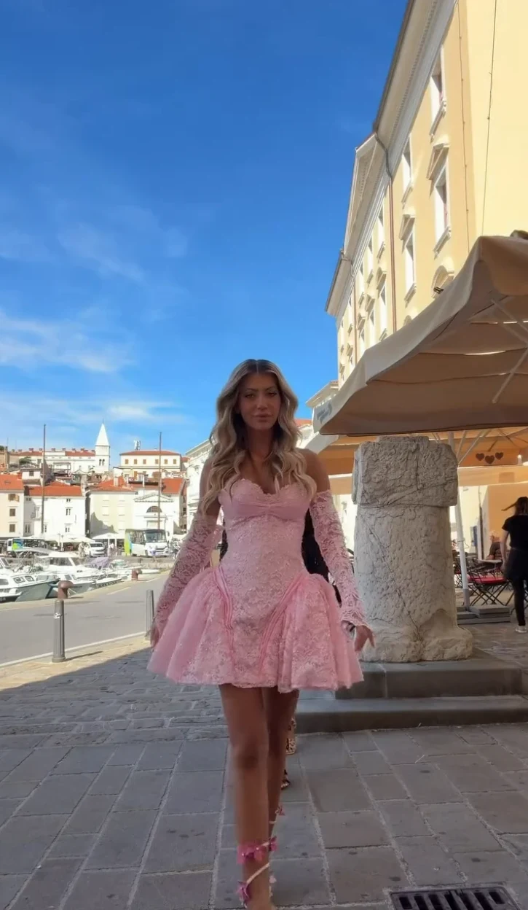
Čipka, korset i leto.
U fokusu
Korset mini haljina sa dugim čipkanim rukavima — u pet nijansi.
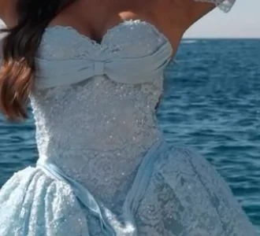
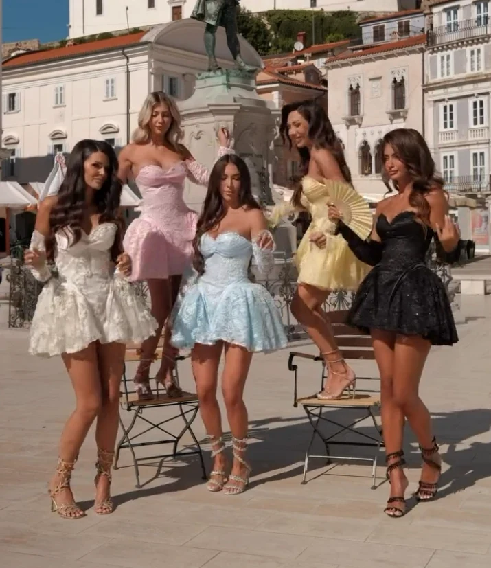
Ista linija,pet karaktera.
Sve haljine na fotografijama dele isti kroj: korset bez bretela, presavijenu traku preko grudi, zakrivljen šav struka i kratku suknju sa izraženim volumenom na bokovima. Razlikuju se boja i čipka — od šljokica na crnoj do reljefnog cveća na slonovači.
Nazivi su radni — konačne nazive modela potvrđuje brend.
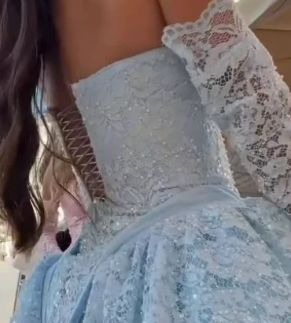
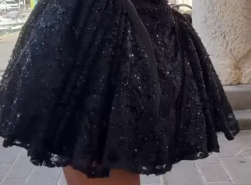
3D atelje
Korset,
struk, volumen.
Lutka ulazi u studio. Prvo silueta: uzak korset i suknja koja se odmah širi preko bokova.
Šav koji
crta struk.
Šav struka je zakrivljen — najviši je spreda, spušta se ka bokovima i odatle pušta volumen.
Čipka
i traka.
Srcoliki izrez sa festonom, presavijena traka preko grudi, čipka preko podloge.
Vezivanje
kao korset.
Na leđima je ukršteno vezivanje. Dugi čipkani rukavi su odvojeni od haljine.
Sada je
na vama.
Okrenite lutku, promenite model i boju, pogledajte detalje.
Pet boja. Jedna silueta.
Skrolujte — lutka se okreće. Prevucite da je sami okrenete.
Petizdvojenihlookova.
Svaki look je fotografisana haljina. Izaberite „Pogledaj u 3D“ i atelje se otvara sa istim modelom i bojom.
Leto u čipki
Kadrovi iz kampanje: pokret, leđa, more i detalji tkanine. Skrolujte — galerija ide u stranu.
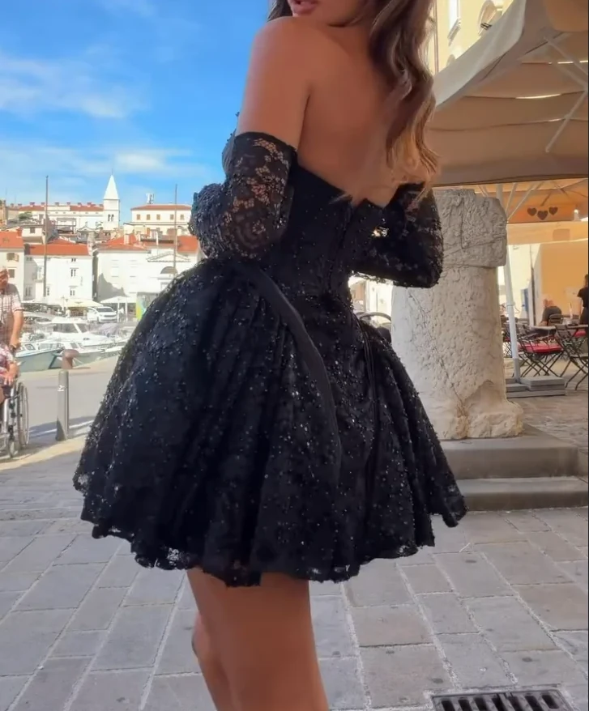
BeleškaVolumen počinje tamo gde se šav struka spušta ka boku.
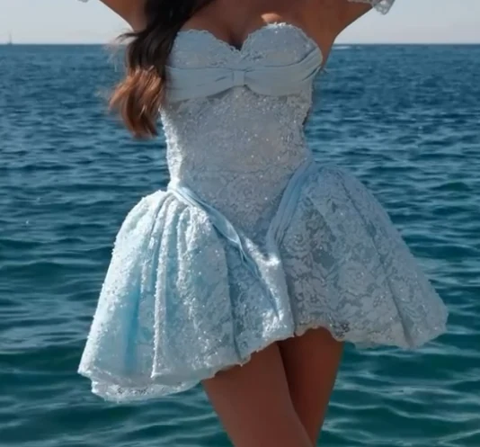
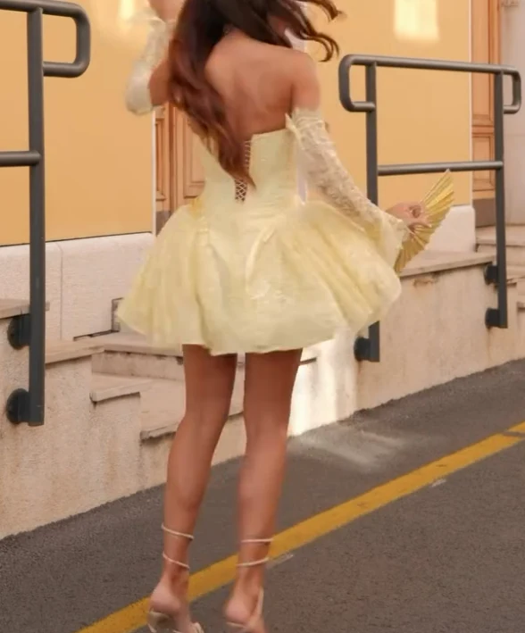
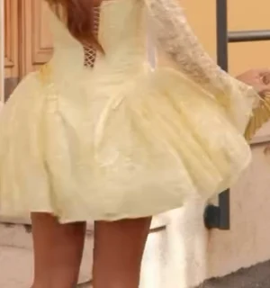
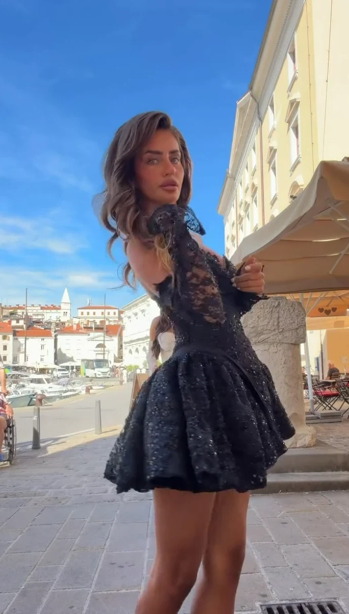
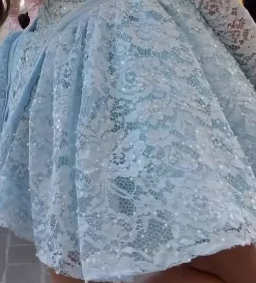
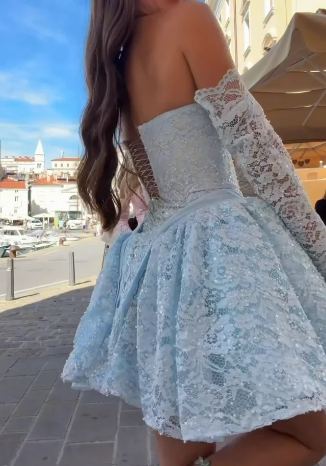
Pet nijansi.
Jedan potpis.
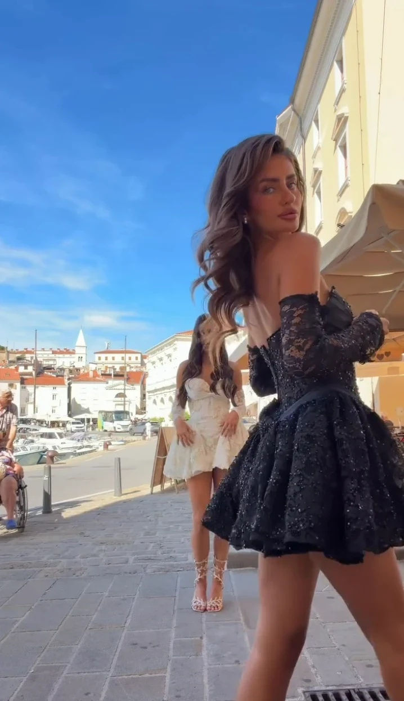
Haljineiz Kalenićeve.
ZOE BY AZ je beogradski butik haljina. Modele možete pogledati i probati u Kalenićevoj 6 — dolazak se ne zakazuje.
Nove modele i kampanje brend prvo objavljuje na Instagramu. Tamo možete poslati i poruku sa pitanjem o veličini ili dostupnosti.
- AdresaKalenićeva 6, Beograd
- Radno vremePon – pet 13 – 19 h · Sub 11 – 17 h
- Instagram@zoebyaz ↗
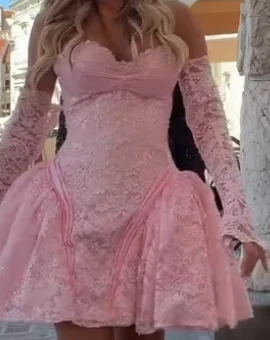
Dođitena probu.
- Ponedeljak – petak
- 13 – 19 h
- Subota
- 11 – 17 h